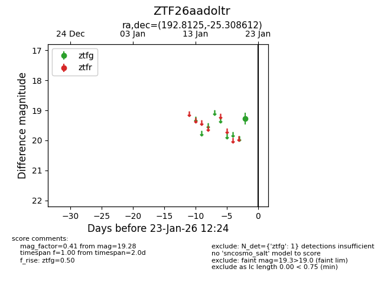
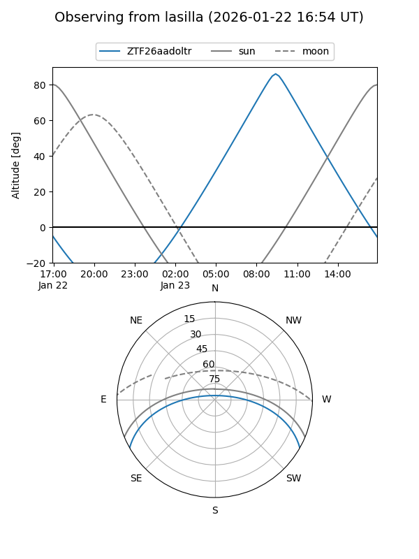
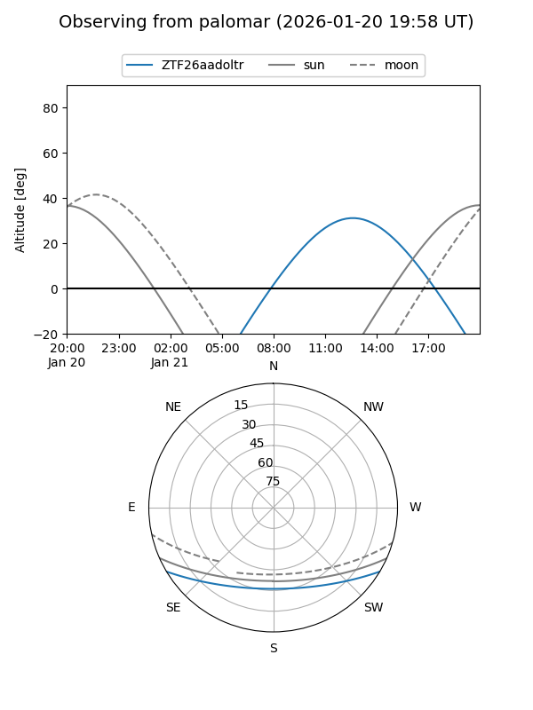

ZTF26aadoltr
Target ZTF26aadoltr at 2026-01-21 12:21
Aliases and brokers:
FINK: link
Lasair: link
ALeRCE: link
alt names
ZTF26aadoltr (ztf,fink_ztf)
Coordinates:
equatorial (ra, dec) = 192.8125,-25.30861
equatorial (HMS+DMS) = 12:51:15.01,-25:18:31.00
galactic (l, b) = (302.8784,+37.56312)
Flags:
Photometry:
last ztfg=19.28
1 ztfg detections
Lightcurve

Visibility


Additional plots